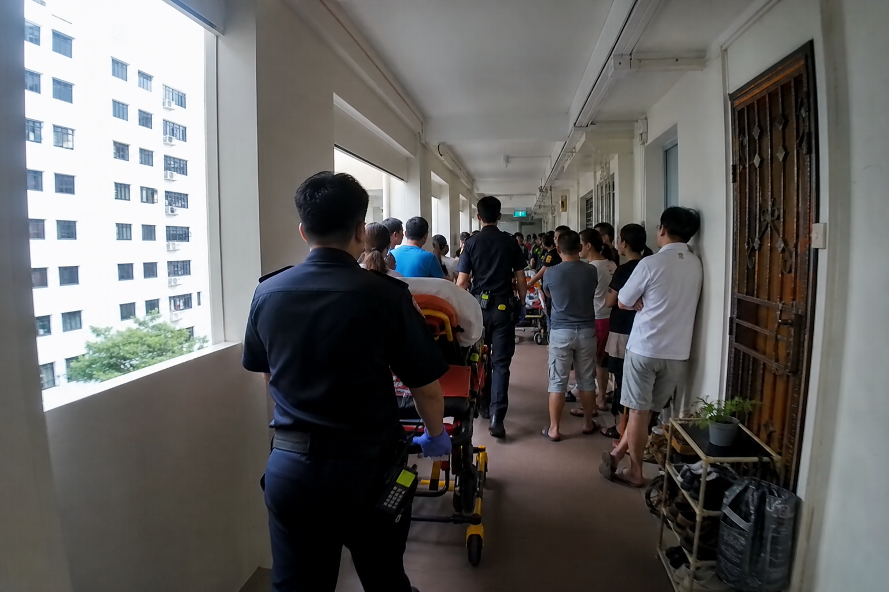
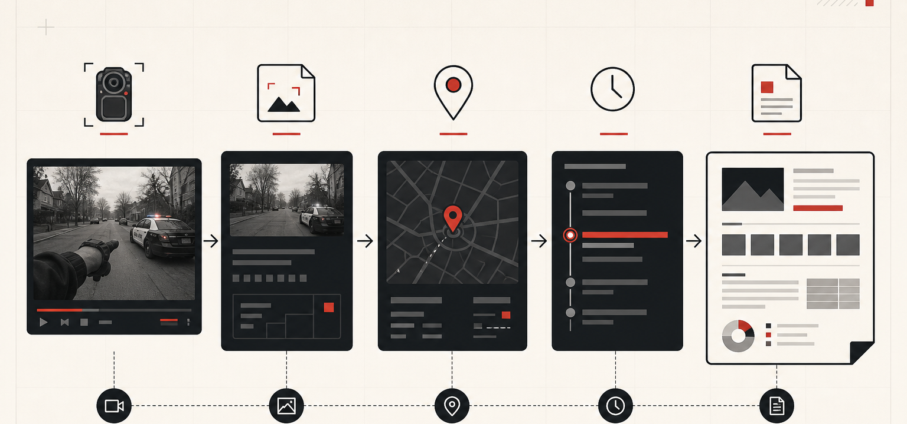

Where raw feed breaks down
Before · During · After
01
Ops Centre must watch multiple feeds and mentally track what changed.
02
Important visible cues can be missed, repeated, or trapped inside radio notes.
03
After the incident, teams still reconstruct the timeline from memory and scattered evidence.
257,158
EMS calls handled in 2025.
40,644
Trauma cases, including falls, industrial accidents, and assaults.
2,050
Fire calls still require visibility, coordination, and documentation.
One bodycam intelligence layer, multiple incident types
Fire
Smoke, blocked path, exit cue, changing conditions.
Medical
Patient access, crowd encroachment, stretcher path.
Rescue
Entry point, trapped-person cue, unsafe access route.
After action
Source frames, confirmed timeline, report export.
01
Bodycam frame + location
Phone prototype sends sampled frames with responder, time, incident, and approximate position.
02
Vision model triage
gpt-5.4-mini flags visible cues worth officer review.
03
Source-frame evidence
Each cue stays tied to the exact frame, feed, confidence, timestamp, and location context.
04
Officer confirmation
Ops Centre confirms, dismisses, or annotates. AI output is not treated as command.
05
Timeline + report
Confirmed facts become live handover notes, AAR material, and exportable incident records.
Boundary
No diagnosis, facial recognition, or automated command decision.
Memory
Every confirmed event keeps its source frame and audit trail.
Workload
No typing, tagging, or dashboard use by frontliners during the incident.

Medic 1 · source frame
review
FF 1
watch
FF 2
online
Prioritised queue
source-linked
88%
Blocked stretcher access
Medic 1 · 14:06
review
84%
Crowd close to crew
Medic 1 · 14:08
watch
76%
Smoke near exit route
FF 2 · 14:10
review
Approximate scene map
pins
The prototype flow is visible in one place: observe, confirm, then export the record.
01
Alert queue shows what changed, not every frame.
02
Map pins and timeline events link back to source frames.
03
Incident record export starts from confirmed facts.
AI cue for review
Source-frame evidence card
Suggested cue
Stretcher access may be constrained by crowding near corridor.
14:06
AI suggests patient access constraint from Medic 1 source frame.
14:07
1stSight pins the cue to the scene map for Ops Centre review.
14:08
Confirmed event enters timeline and handover summary.
Safety boundary: no medical diagnosis and no automated command. 1stSight packages visible evidence for human confirmation.
Capture
Mobile PWA simulates responder bodycam with sampled frames and metadata.
Ingest
Backend receives frames, incident ID, responder source, timestamp, and approximate location.
Analyze
gpt-5.4-mini flags visible scene cues; deepseek-v4-pro consolidates confirmed records.
Record + UI
Event store keeps source frames and officer actions. Ops Centre reviews map pins, timeline, handover, and report export.
Deployment path
The web app and backend services run on Dell Cloud Native Platform, creating a clear route from demo prototype to deployable system.
Model boundary
Inference sits behind the backend: gpt-5.4-mini for vision triage, deepseek-v4-pro for timeline and report analysis.
